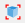

5.1.3.1. Global and Local Workspace#

In Python, every loaded module has its own variable workspaces. The main workspace of itom is the one used when Python is instantiated.
Every workspace is a dictionary, containing all variables as well as method and function references and imported packages or modules. The content of the top-most global workspace is listed in the toolbox Global Variables. There is a filter, such that all variables of type method, function and type (classes…) are not listed in that overview. If you want to access items of this global workspace you can directly access them by their variable name, e.g.:
>>print(__name__)
'__main__' # answer
However, this is only possible if you work in the command line or a script that is not part of a separate module. In this case, you can access items of itom’s global workspace by importing the module __main__:
import __main__
print(__main__.__dict__["__name__"])
Note
In Python, every module or package has its own global workspace. The main global workspace depicted in the toolbox is related to the global workspace of itom that is always accessible by other modules using the dictionary __dict__ of the __main__-module.
The toolbox local variables is only enabled if you are currently debugging a python script and the execution is stopped (for instance at a breakpoint). Then, the current workspace (local scope) of the method, where the debugger has been stopped, is shown. If the debugger currently processes any code not contained in a method, no local workspace is available.
The toolbar of the toolbox as well as the context menu of every item is context-sensitive.
This means, that the available actions depend on the type and / or number of selected variables.
General actions are among others: You can always delete  one or multiple selected variables or you can rename
one or multiple selected variables or you can rename  one selected variable.
Additionally, there is the possibility to import
one selected variable.
Additionally, there is the possibility to import  or export
or export  variables to
or from this workspace.
variables to
or from this workspace.
A click on import opens a file dialog where you can choose a specific file to
import. The following file formats are loadable:
itom data collection (.idc). This is a pickled file, that may contain several python variables and is loaded using the module
pickleof python.Matlab file (.mat). You can load matlab files in itom if you have the Python package
scipyinstalled.Several itom algorithm-plugins contain methods that implement one of the following interfaces: iReadDataObject, iReadPointCloud, iReadPolygonMesh. Then the data formats that these methods can load are accessible in the dialog as well for loading.
Note
Existing variable names will be replaced unless the variable points to a class, method or function.
If you selected one or multiple variables and click on export , another file
save dialog is shown where you can choose a specific filename in order to export the variables.
You can export into the following file formats:
itom data collection (.idc) [multiple files]. The variables are pickled (python module
pickle) to the file.Matlab file (.mat). [multiple files, Python package
scipyrequired].If you have itom algorithm-plugins installed that implement one of the following interfaces: iWriteDataObject, iWritePointCloud, iWritePolygonMesh, then you can also export dataObjects, pointClouds or polygonMeshes into the specific file formats. [single variable only].
In both the file open and save dialogs, the filter list always considers all file formats that are available for import and export on your computer.
All variables which are defined in python console or in any python script are stored as global variables. These can be seen in the Global Variables Toolbox.
In order to insert the name of a variable into the command line or a script editor widget you can drag-and-drop a variable or its child into the command line or any script. For standard data types, the correct command to access that variable is copied. There are rare situations, where the copied name cannot be directly used to access the desired item, e.g. if there is a dictionary lookup involved, whose key has another type than a number or a string (e.g. enumeration). The same name can also be accessed via the “variable detail dialog” (see below).
The toolbar of the workspaces toolbox contain a special toggle button , that defines how to proceed with imported container files (e.g. idc files). If the button is pressed, the content of the loaded idc file is unpacked at the top level and all key-value pairs are loaded a separated variables to the workspace. Else, an input box is opened and you can give a new variable name. Then, the entire dictionary of the idc file is set as value of one single variable with the given name.
5.1.3.1.1. Variable detail dialog#
Whenever a variable of a workspace is double-clicked or the  action of the toolbar
is clicked, a variable detail dialog is opened. For most variables, this dialog is a simple
dialog, that shows the name, the type and the content of the variable. The content is usually
the result of its __repr__() method:
{kind=link}
The name can be copied to the clipboard by clicking the copy button on the top right side.
For variables of type dataObject and numpy.ndarray a special
extended dialog is available:
{kind=link}
This dialog shows a 2d table view of the dataObject or numpy array. On the top, the same
basic information are available, than in the standard dialog (see above), extended by
the shape and data type of the array. If the array has two or less dimensions, its
content is fully displayed in the table in the center area of the dialog. For higher dimensions,
only a 2d slice of the entire array can be shown in the table. This slice can then be
selected by the optional drop down menus and the spin box(es) in the slices area below
the standard information. This row is only available for arrays with more than two dimensions.
Note
Currently, this dialog can only show arrays of type (u)int8, (u)int16, int32, float32, float64, complex64, complex128 or rgba32. For other types, the standard dialog is shown.
Various configurations and features of the table view are available via the toolbar on top of the table as well via its context menu. The following features are available (among others):
Copies the displayed table (or the current selection) to the clipboard. This is done as tab-separated (csv-like) plain text as well as html table, that can also contain the current background colors if a heatmap (or similar) is currently enabled. Floating point numbers are copied in the local representation, such that pasting this text to applications, like Microsoft Excel or Libre Office Calc, can directly display the table. If parts of the table are currently selected, only the selected items will be copied.
Exports the displayed table (or the current selection) to a CSV file. During the export, many configurations for the export can be set in a configuration dialog.
Clears an active selection (if available).
The number of visible decimal digits can be changed, as well as the representation of decimal numbers can be selected (Standard: -12.45769, Scientific: -1.245e1 or Auto for the more appropriate representation).
The width of all columns can be automatically adjusted such that all numbers are fully visible.
A heatmap can be displayed as background color, such that the entire table is coloured depending on the current values of each cell. The min / max range of this heatmap can be adjusted, too. Rgba32
dataObjectwill display their real color information as background color.It is possible to plot the entire table or selected cells, rows or columns are 2D or 1D plots. This is only possible, if all selected ranges span either the same rows or columns.
dataObject come with a lot of meta information, like axis or value descriptions
or units, axis scales or offsets, a tag dictionary etc. All this meta information is displayed
in the tab meta information:
{kind=link}
5.1.3.1.2. Plot from workspace#
It is possible to directly plot variables of type dataObject,
numpy.ndarray, pointCloud or polygonMesh from
the workspace. Open the context menu of any variable or click the variable and see the
context-sensitive toolbar of the workspace.
{kind=link}
The last entries of this context menu or the toolbar are sensitive to the corresponding type of
the variable. For dataObject (or numpy.ndarray), the following
options are available:
1D line plot (corresponds to the script command itom.plot1(object))
2D image plot (corresponds to the script command itom.plot2(object))
2.5D isometric plot (corresponds to the script command itom.plot25(object))
For pointCloud or polygonMesh, the available options are:
3D cloud or mesh visualization (corresponds to the script command plot25(object))